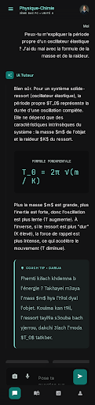

Galerie des écrans haute fidélité pour le tutorat IA premium au Maroc.
Le tunnel d'entrée complet, optimisé pour la conversion et l'identité marocaine.
Première impression et conversion.
Bifurcation Élève / Parent.
Choix de la classe scolaire.
SM, PC, SVT, ÉCO, Lettres.
Français, Arabe, Darija.
Matières prioritaires.
Écran de transition (Lot 2).

La référence de qualité visuelle.